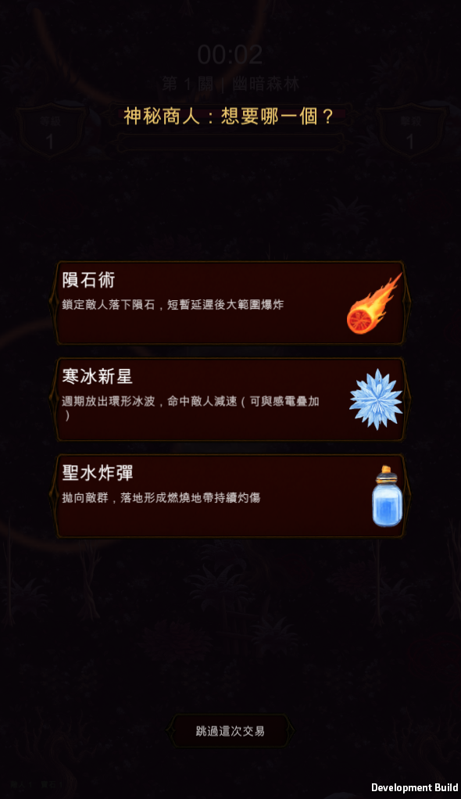
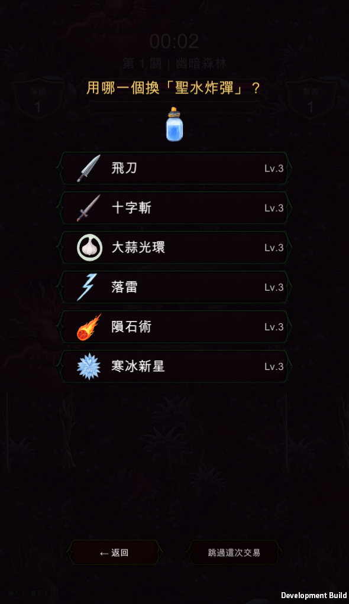

吸血鬼復仇 · UI
回應實機回報：「交易介面文字跟 UI 都太小看不清楚」、「選擇要交易的項目是純文字的」。這階段不動玩法與數值，只放大字級並把第二步做成有美術的卡片。


| 元素 | 改前 | 改後 |
|---|---|---|
| 商品說明 | 22 | 30 |
| 商品名稱 | 32 | 44 |
| 標題 | 36 | 48 |
| 返回／跳過按鈕 | 240×64 | 320×88 |
說明文字的 22 原本是全 App 最小的字級，就是實機看不清楚的那一段。
商品名稱的框原本用 Anchor + sizeDelta，而且兩軸都設成 stretch —— 這種情況下 sizeDelta.y = 58 的意思是「卡片高 + 58」，實際高度變成 266，框往卡片外面掛出去 43.6px。改用 Stretch 明確算上下界後歸零。
這是量出來的，不是看截圖看出來的：43px 在縮圖上看不出來。
VR_ONLY=merchant 驗證場景與 VrDirector.DebugForceMerchant()，走的是正式流程同一個入口（MerchantOffers() → OnMerchantOffer），面板收到的資料跟玩家實際遇到商人時一樣。Art/Icons/ 現有的 66 張圖示是否涵蓋所有可交易道具——缺的會是空框。這兩項要花錢生成素材，等確認再動。
commit d289ea7 · 尚未進 build